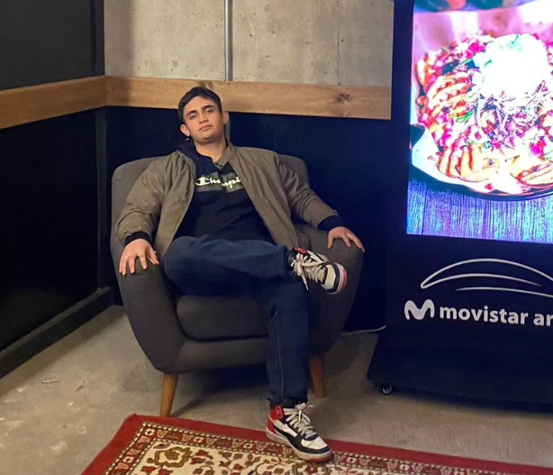

Christopher Abarca CV
Correo: cxxxxx@gmail.com
Numero: +569 XXXX XXX5
Pais: Chile

Perfil profesional
Estudiante de Ingeniería en Informática con sólida formación en matemáticas y experiencia en soporte técnico, documentación de procesos y apoyo académico. Destaco por mi capacidad para resolver problemas de forma eficiente, adaptarme rápidamente a nuevos entornos y comunicarme de manera efectiva con equipos multidisciplinarios. Comprometido, proactivo y con habilidades tanto técnicas como analíticas, busco seguir desarrollándome profesionalmente en entornos dinámicos y desafiantes.
Experiencia laboral
- Soporte tecnico Soluziona (2022-2024)
- Practica Banco de chile (enero - marzo 2025)
- Practica Banco de chile (enero - marzo 2026)
- Asistente Bodega (Octubre 2025 - Enero 2026)
Educación
- Educación basica: Hermanos carrera 2017
- Educación media: Hermanos Carrera 2021
- Educación superior: Universidad Finis Terrae 2022-Actualidad
Competencias
- Soporte técnico y resolución de problemas en plataformas y equipos
- Documentación de procesos mediante entrevistas y elaboración de reportes
- Organización de clases, revisión de informes y apoyo académico
- Manejo de herramientas tecnológicas (Office, CRMs, sistemas internos)
- Trabajo en equipo y comunicación efectiva con ejecutivos y supervisores
- Conocimientos sólidos en cálculo, álgebra, ecuaciones diferenciales y programación básica
- Capacidad de adaptación, análisis lógico y gestión del tiempo
Contactos de referencia
- Supervisor Soporte Técnico: Juan Pérez - juan.perez@soluziona.cl - 569 XXXX XXX5
- Coordinador Académico: María González - maria.gonzalez@uft.edu - 569 XXXX XXX5
- Supervisor Banco de Chile: Jose Miguel Miranda - jose.miguel.miranda@banchile.cl - 569 XXXX XXX5